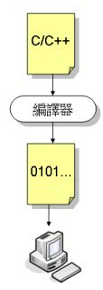
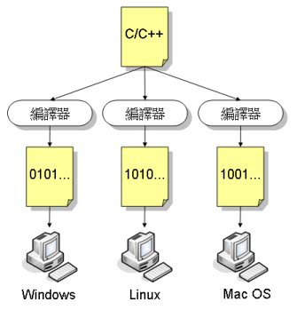
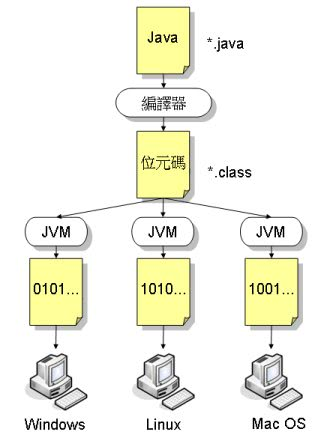

Java程式可以跨平台，這是你在許多書或文件早就看過的描述，但是跨平台是怎麼一回事？在這之前，你得先了解不能跨平台是怎麼一回事。
其 實對於電腦而言，它只認識一種語言，也就是0101序列所組合而成的指令。當你使用的是C/C++等之類的高階語言撰寫程式時，其實這些語言，都是比較貼 近人類可閱讀的文法，精確點來說，大部份就是比較接近英文文法的語言。這是為了方便人類閱讀及撰寫。電腦其實看不懂C/C++這類語言。
你要有個「翻譯員」將你寫的C/C++程式，翻譯為電腦看得懂的0101序列指令，這個翻譯員就是所謂的「編譯器」（Compiler）：

問 題在於，每個平台所認識的0101序列並不一樣。在Windows上也許某個指令是0101，在Linux下也許是1010，因此不同的平台必須使用不同 的編譯器來翻你的程式，而在Windows平台上編譯好的程式，也不能直接拿到Linux等其它平台上執行，而必須經過重新編譯的動作，讓編譯器將你的程 式翻譯為該平台可以執行的指令。

由於每個平台的特性不同，可引用的程式庫（Library）不同，也許你的程式還得作修改，才可以在另一個平台上編譯執行。這很不方便，這表示如果你在Windows設計了一款遊戲，想要賣給Linux的使用者，就得再花費一些功夫。
Java 也是個高階語言，要讓電腦執行你撰寫的程式，也是得透過編譯器的翻譯。不過，Java編譯時，並不直接翻譯為相依於某平台的0101指令，而是翻譯為中介 格式的位元碼（byte code）。Java 的原始碼副檔名為*.java，經過編譯器翻譯過後，會變成*.class的位元碼。如果想要執行這個位元碼檔案，目標平台上必須安裝有JVM（Java Virtual Machine）。JVM會將位元碼翻譯為平台相依的語言。

不同的平台必須安裝該平台相依的JVM。這就好比你講中文（*.java），Java編譯器幫你翻譯為英文（*.class）。之後該英文文件，到當地之後，再由當地看得懂英文的人翻譯為當地的語言。
所以JVM所擔任的職責之一，就是當地的翻譯員，將位元碼檔案翻譯為當時作業系統看得懂的0101序列。不過這不是最重要的，基本上如果只是要翻譯員的話，直譯器（Interpreter ）就辦得到了。
JVM有個很重要的觀念就是：「對於Java程式而言，其實它只認識一種作業系統（或說是一種機器），這個系統叫作JVM，而對於JVM而言，位元碼檔案就是它的可執行檔案！也就是副檔名為.class的檔案。Java程式理想上，並不用理會真正執行於哪個平台之上，它只要知道如何執行於JVM之上就可以了，至於JVM實際上如何與底層平台作溝通，則是JVM自己的事！」這個觀念非常的重要，對於往後釐清所謂PATH變數與CLASSPATH變數，有非常大的幫助。